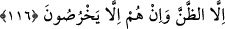
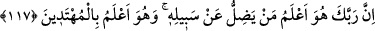

olmadıkça îman etmiş olmazlar.” (en-Nisa, 4/65) ve “Allah ve Rasûlü, bir işte
hüküm verdiği zaman, artık inanmış bir erkek ve kadına, o işi kendi isteklerine
göre seçme hakkı yoktur.” (el-Ahzab 33/36) buyurmuştur
Müridler de, mürşid-i kâmilin kendilerine söylediği sözlerden dışarı çıkmazlar.
Âyetin haber verdiği gibi hüküm hakîkatte Allah Teâlâ’ya ait olsa da Rasûlullah (s.a.)
Allah Teâlâ’nın halifesidir. Sözünde ve hâlinde onu adım adım izleyen varisleri de
öyledir.
116. Yeryüzünde bulunanların çoğuna uyacak olursan, seni Allah’ın yolundan
saptırırlar. Onlar zandan başka bir şeye tâbi olmaz, yalandan başka söz de
söylemezler.
“Yeryüzünde bulunanların çoğuna uysan,” Burada kastedilen, Mekkeli müşriklerdir.
Çünkü onlar leş yemeyi helâl görüyorlar ve müslümanları da leş yemeye davet
ediyorlardı. “Bu leş, sizin bıçaklarınızla boğazladıklarınızdan daha helâldir. Çünkü
bunu Allah boğazlamıştır.” diyorlardı. İşte onların bu iddiaları üzerine bu ayet nazil
olmuştur.
“Ey Muhammed, eğer kâfirlere itâat edersen onlar yeryüzünde olanların çoğunluğu
oldukları için “seni Allah’ın yolundan saptırırlar.” O’nun dininden ve şeriatından
uzaklaştırırlar.
Sanki: “Onlar nasıl saptırırlar?” diye bir soru sorulmuş, cevâben şöyle buyurulmuştur:
“Onlar” dinleri konusunda ve leş hakkında seninle yaptıkları tartışmada “sadece
zanna uyuyorlar.” Babalarının dininin hak olduğunu zannediyorlar. Onların izinden
gitmekle kendilerinin de hidayet üzere olduklarını vehmediyorlar. Oysa onlar apaçık
sapıklık içindedirler.
Şüphesiz kendisi dalalette iken irşâda soyunan kişi, başkalarını ancak kendi nefsinin
yoluna çağırır. Onlar kendileri doğru yoldan sapan ve başkalarını da saptıranlardır.
Hakk’ın yoluna zan, taklid ve hevâ ile gidilmez. Ancak sıdk (doğruluk), tahkîk (araştırıp
inceleyerek, hakîkatine ererek) ve hidâyetle sülûk edilir.
“Ve onlar sadece saçmalıyorlar.” Onlar, leş yemeyi helâl saymak ve sair sapıklıkları
ile ancak Allah’a yalan isnad ediyorlar.